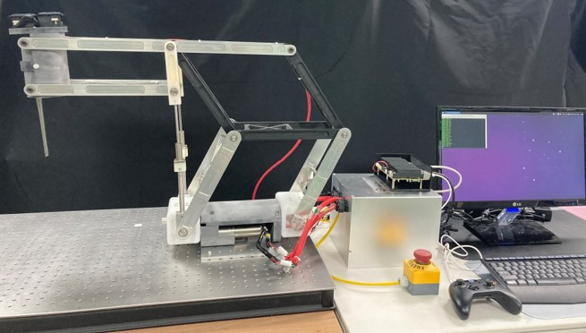
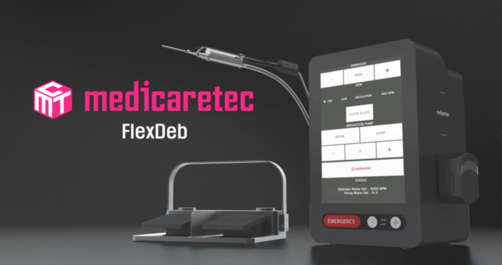
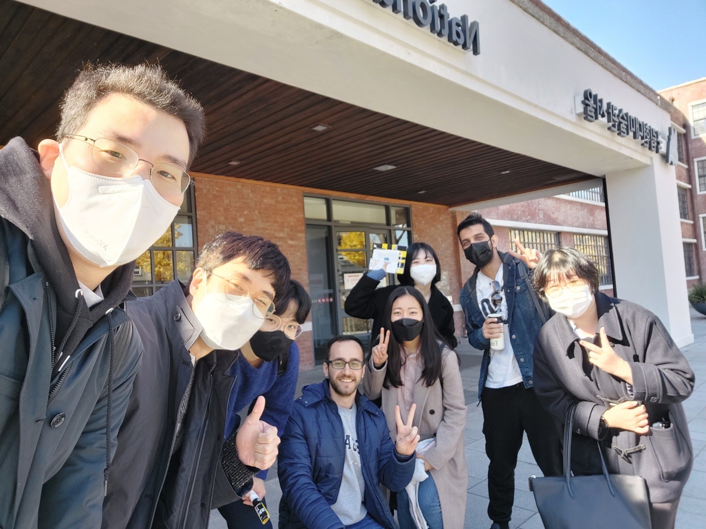
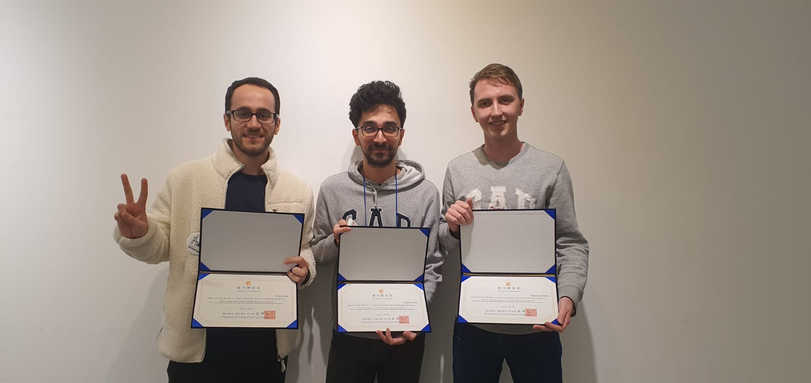

01
Spine Surgery Robot
A real-time control framework connecting EtherCAT motion, ROS 2 nodes, safety I/O, and a Qt operator interface.
- C++
- ROS 2
- EtherCAT
- RT Linux

Embedded software engineer Malmö, Sweden
I build dependable software where hardware, timing, and product behavior meet. From vehicle platforms and STM32 firmware to medical robotics and TinyML.
A focused selection spanning surgical robotics, embedded medical devices, and applied machine learning.
A real-time control framework connecting EtherCAT motion, ROS 2 nodes, safety I/O, and a Qt operator interface.

02Control software for a compact surgical platform with motor, pump, touchscreen, and safety logic.
 03
03
A collaborative prototype that applies image classification to support retinal disease assessment.
 Engineer / Builder / Teammate
Engineer / Builder / Teammate
I am an embedded software engineer based in Malmö, working with Sigma Connectivity Engineering AB and consulting Volvo Cars on core integration for a new generation software platform for fully electric vehicles.
Before automotive, I developed firmware and medical-device control software and worked in robotics research. My MSc in AI and Robotics and doctoral work at Mid Sweden University connect embedded systems with TinyML, sensor processing, and real-time control.
Working principle “Know thyself and nothing in excess.”Read the full curriculum vitae
Four engineering layers, treated as one connected system.
Firmware, drivers, and application code designed around real hardware and delivery constraints.
Software integration and testing across embedded Linux, connected hardware, and vehicle platforms.
Deterministic communication, motion, sensing, and safety paths for physical systems.
Compact models and signal pipelines deployed to constrained microcontrollers for real-time inference.
Sigma Connectivity Engineering AB / Volvo Cars
Contributing to core integration of a new generation software platform for fully electric vehicles.
Mid Sweden University
Researching TinyML for resource-constrained systems, with models deployed to microcontrollers for real-time sensing.
Epitome / ETH Zürich
Developed and tested STM32 peripheral drivers while contributing to low-cost embedded sensing research.
KIST / University of Science and Technology / Medicaretec
Built real-time EtherCAT and ROS 2 control software for a spine robot and embedded control for a surgical microdebrider.
Mersin University
Graduated as Engineering Faculty valedictorian and kept building at the boundary of circuits and code.
Eight indexed works span TinyML, embedded sensing, medical instruments, and robotic control, supported by public code and implementation guides.
TinyML for real-time catalyst monitoring, compressed for ESP32-S3 and Arduino Nano 33 BLE targets.
Low-power acoustic behavior analysis deployed to resource-constrained embedded devices for field monitoring.
A transformable camera sheath that provides a localized view of the surgical instrument tip.
Embedded machine learning for non-destructive damage classification from acoustic-emission signals.
Lightweight postural-stability models deployed to an ARM Cortex-M4 microcontroller.

The best engineering happens when software, hardware, research, and clinical perspectives stay in the same conversation.
Meet the workMilestones shared with mentors, collaborators, and teammates.
 Kiri-Lab Idea Bubbling Competition
Encouragement award for a real-time EtherCAT master on Raspberry Pi
Daewoong
Kiri-Lab Idea Bubbling Competition
Encouragement award for a real-time EtherCAT master on Raspberry Pi
Daewoong

Foundation Hackathon AI-based diagnosis assistant developed as a multidisciplinary team Mersin Engineering Faculty Valedictorian
Commencement speaker at Mersin University
Engineering Faculty Valedictorian
Commencement speaker at Mersin University
I am always interested in thoughtful embedded, automotive, robotics, and medical-device work.
Start a conversation Or explore the code on GitHub